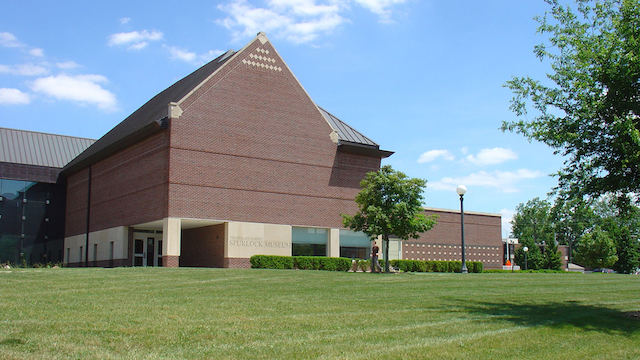

Spurlock Museum Repo
骤起的兴致和自终至始的计划方式总能塞满一个无所事事的日子，为了最后能在music building抓一只feebas完成回国前的美纳斯大业🤓，在地图上发现了同处一个block的 Spurlock Museum，于是计划以游荡来填补午后的空白，毕竟也许几天后的离开会是不再重返的归途。

The Dawn of the Individual
距离写完开头之言已经过去很久了…… 昨日在图书馆偶遇《奥古斯都》，翻看觉得颇有兴味这才想起这个展。官网盗图如上，是此展一进门的视野，左奥古斯都全身披挂举手挥斥，听闻初至阿波罗尼亚奥古斯都还是屋大维之时给人印象是个羞涩沉默的少年，然而面对这个第一门雕像 [1] 却是无从想象书里梅赛纳斯第一眼见到他的倚船背影。借约翰·威廉斯的历史笔触铺开故事，于是此时君临天下的奥古斯都应该随着手指和目光触及远方和过往，心中配中二台词一句——我改变世界，不过是命运抓住了我，而我选择不躲开它的怀抱。中间那副放飞自我姿态的是拉奥孔和他的儿子们，据说是因为他识破希腊木马诡计试图阻止特洛伊人搬木马入城而触怒了希腊守护神雅典娜，被雅典娜从召唤的两条巨蟒缠绕至死，这守护方式有点…好吧有点雅典娜。雕塑果然与诗作大为不同，其痛苦不在于外放的声势而在于收不得发的扭曲（但还是有点喜感…）。右侧阿波罗身背箭筒一弓方毕，肌肉线条和经脉赏心悦目。西方雕塑果然是塑造人物信息量富集的表现形式，黑色顶幕下象牙白色的雕塑轻易聚焦视线，仰视角度的笼罩感又易于浸入心无旁骛的欣赏境界，这种显式的关注延伸至隐式不难解释为什么热衷此道的古希腊同时也是个人主义发展之滥觞。
从未见过如此俊美之凯撒……对比可见，随手拍的打光效果非常棒，阴影也是作品的一部分（类比情景），眼眶投影让没有黑白对比的眼睛出现深邃感，瘦削脸颊的骨架阴影填充了面部于是虚实构成丰富的饱满，些许皱眉和额头纹收紧了中线。
抓鹅是属于小男孩的勇气（反正我是有点怕鹅…），非王非神的生活场景更适合作为人本的主题作品，不同于神们优美的腹肌线条，小男孩肉嘟嘟的小肚腩和鹅肥美的羽毛覆盖的腹部相映成趣令人忍俊不禁。
Crossroads
东南亚展馆的设计其实乏善可陈，“交汇”这个主题大概就是光明正大的把各个区域的展物混搭，大概贴几个有意思的物件吧。
- 没头脑和很高兴（hooray三连）

更高兴的在这里
赶猪要用猪鼻子哨🐽
吃瓜一家亲
小黄人的cos秀

A European Odyssey
欧洲奥德赛意为陈列变迁，变迁的软硬几大方面无非是政权更迭宗教扩张和科技革新，而这几者又不曾分离。针线助手希特勒，80年代的苹果，纳粹控制的下的水龙头，很是有些意思。
The Gift of the Nile
埃及馆影响深刻的有两个，都算是技术结合的体验。一个是教育向的妖魔神怪认知图谱，介绍不同的神鬼形象以及在出现过的作品寻找变种意象；还有一个是从发掘到彻底扫描分析还原Child Mummy木乃伊的全过程展示，得益于良好的保存还原结果可以深入骨骼结构，可见视频如下：
Central Core
By nature men are nearly alike; by practice they get to be wide apart.
性相近也，習相遠也。
最后讲下大厅的中心展区，标题语来自论语，九个陈列柜旨在将不同展馆通过主题化一以贯之：
好史者把历史在时间线上被翻来覆去地纵横相较，总会得出些“似是而非、不同而同”的体验。横线上的千姿百态，衣食蔽舍所为温饱，交流科技聊以偷闲，艺术信仰是生产消费在精神领域的实例化，而战争源起并用以保卫上述种种所得，大抵人类想要的东西总是相似的。纵轴上的前行者再忙于行程无暇回头也常常会惊觉某事的发生竟然是在当下，而细细回想，它们与远古的风声中传来的哀鸣和深埋地底的动物残骸并无二致。历史和记忆取决于每个人自己对它的阐释，我们从自己的角度，以叙述者的身份讲述那些早已消散在过去时间长河中的故事情节，这些故事没有绝对的真实与相对的虚妄，并将不断地继续在未来重演。
最后附赠一套表情包（收集博物馆表情包乐此不疲）。
- 1.第一门的奥古斯都像，由于在罗马附近郊区第一门（Prima Porta）的莉薇娅别墅发现得名。 ↩